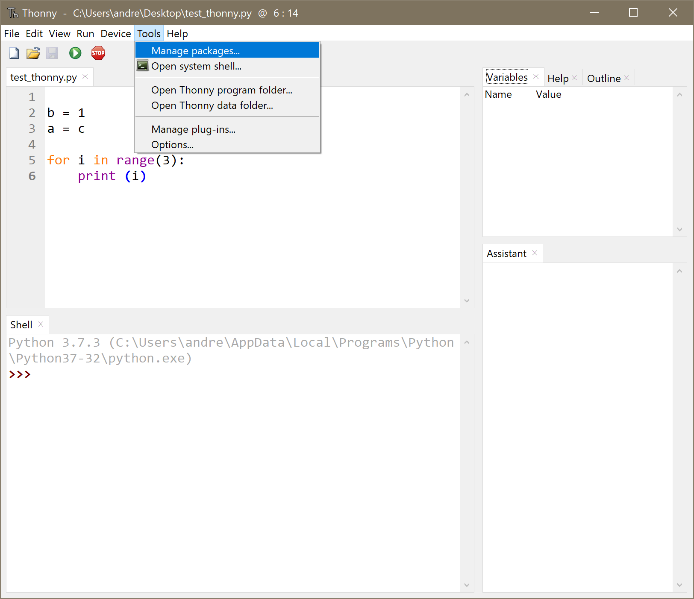
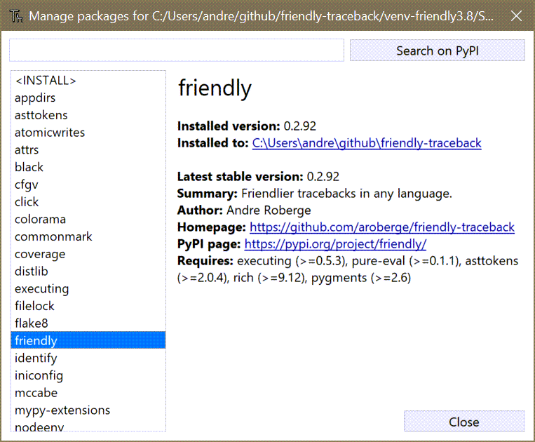
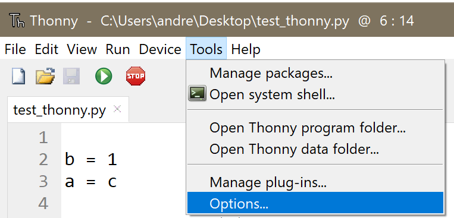
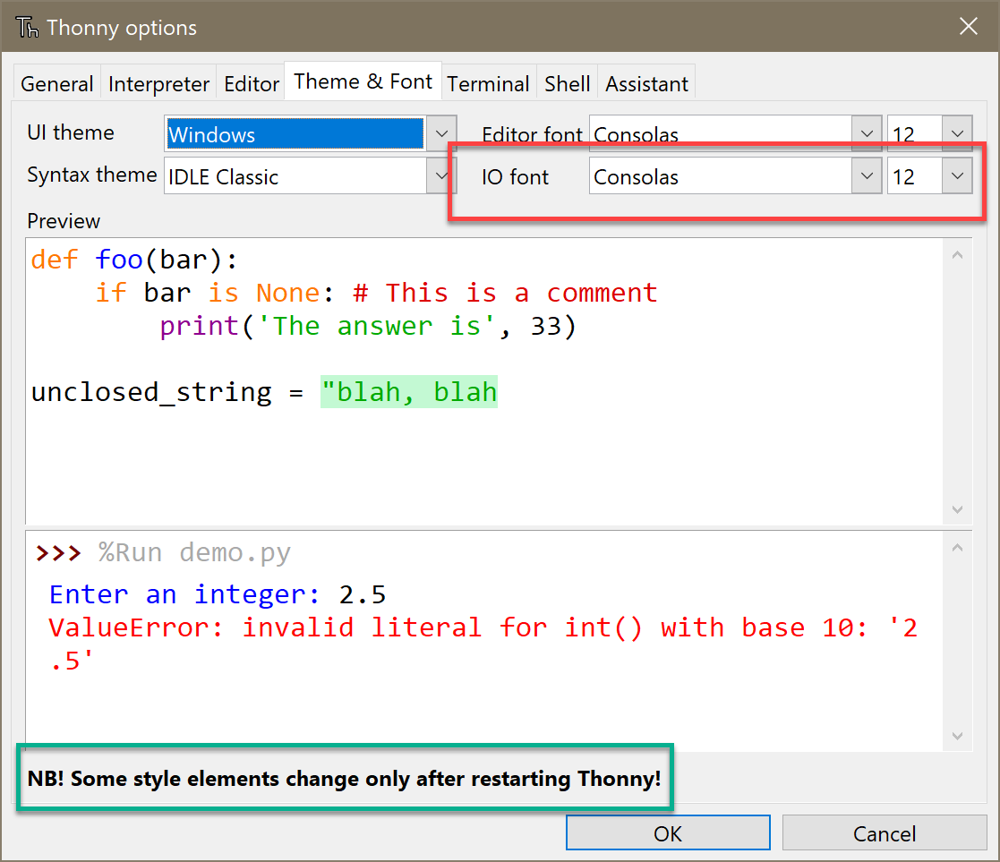
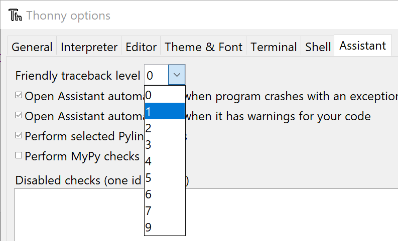
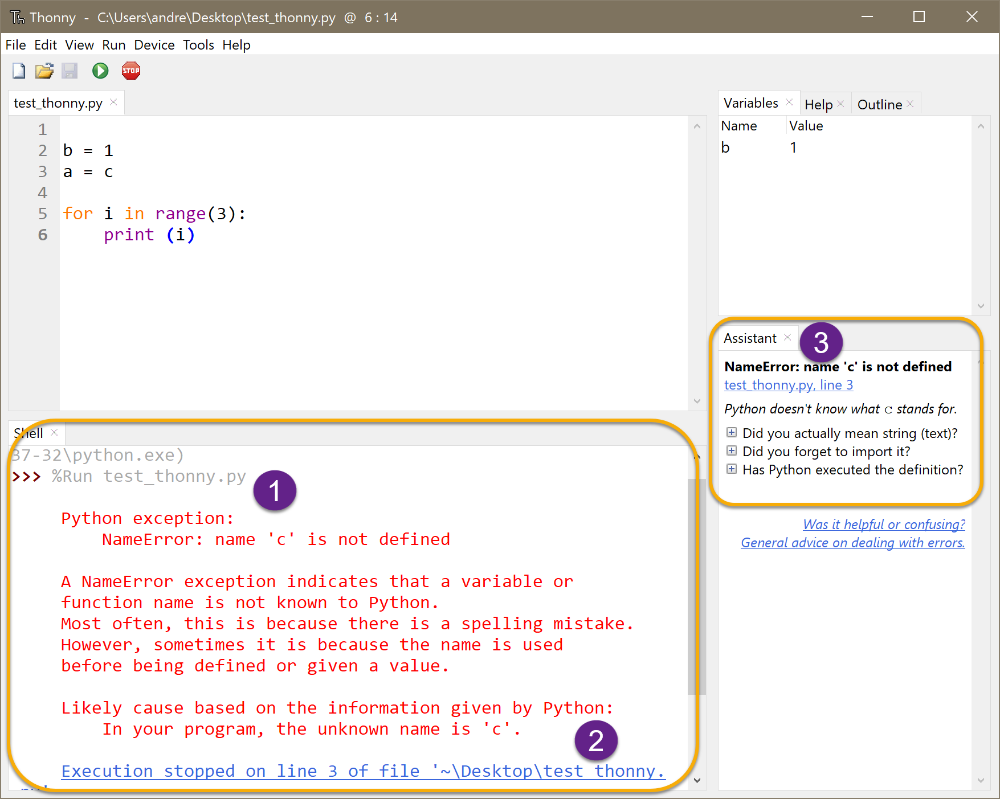
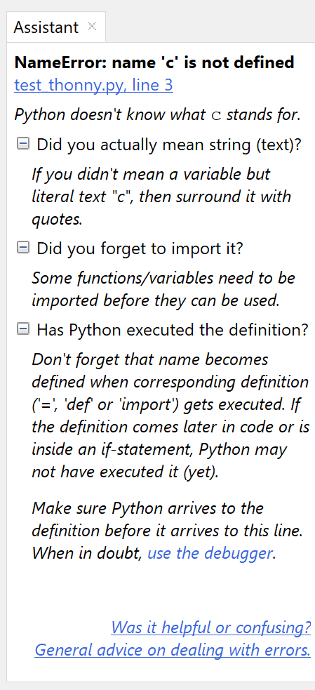
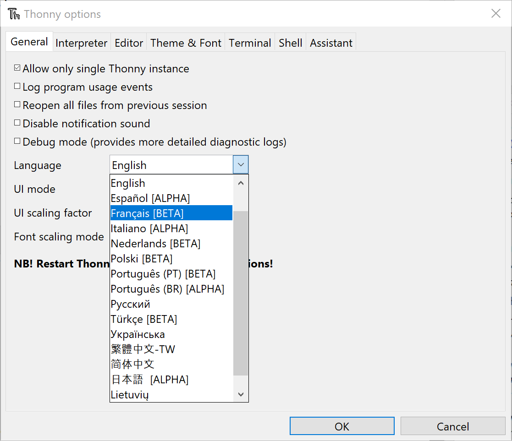
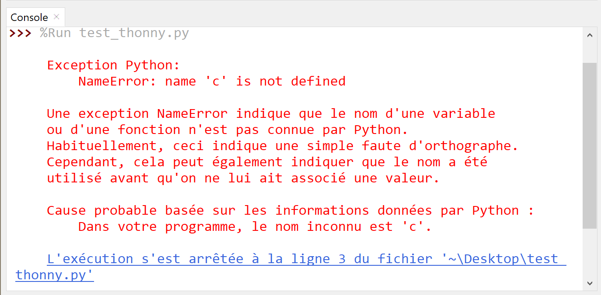

Using with Thonny¶
Starting with version 3.2.5, Thonny will include some support for Friendly-traceback. This is briefly described on Thonny’s wiki which gives the required steps to using Friendly-traceback with Thonny. The current document is a longer description that goes into more details, with screenshots taken with a pre-released version.
As mentioned earlier, Thonny is highly configurable. Among the tools it provides is the ability to install packages either from pypi or others found locally.
{kind=link}
The first step is to ensure that Thonny can see that Friendly-traceback is installed. If not, one can install it with pip or with Thonny itself. As you can see, Friendly-traceback is indeed installed on my computer, along with many other packages.
{kind=link}
Next, we need to set up at least one essential option in order to actually use Friendly-traceback.
{kind=link}
But before getting to the essential option for Friendly traceback, while the option dialog is open, I suggest you explore what is available. Personally, I like to change the default fonts used for the output shell. I mention this in case you wonder why the results on your computer look different from the screenshots here.
{kind=link}
Note that many options require to restart Thonny.
Using Friendly-traceback¶
Next, we need to tell Thonny to actually use Friendly-traceback. As mentioned in a few places in this documentation, Friendly-traceback has different “levels”. Level 0 correspond to disactivating Friendly-traceback: this is the starting value for Thonny. To see Friendly traceback in action, I suggest to use the default value of 1.
{kind=link}
With this choice set, we can run a program that raises an exception and have a look at the output.
{kind=link}
As you can see in (1), the familiar friendly traceback is shown. At the bottom (2), Thonny replaces the passive text that states where an error is found by an actual link: clicking on this link would bring us to the place in the file where the exception was actually generated. This is, in my opinion, a highly remarkable feature of Thonny.
You might also note the side bar (3) known as the “Assistant”. It is, if you wish, Thonny’s own version of a traceback interpreter designed to help users figure out what may have caused the problem. If Thonny finds some possible causes of the error, it shows one or more clickable one-liners.
Below you can see what happens if one expand on the information provided by Thonny by clicking on each individual cause:
French version¶
Next, I want to see the same traceback explanation in a different language - French being, for now, my only other choice.
{kind=link}
Doing this will require to close and restart Thonny: its UI (not shown) including the text on various menus will change to French.
After doing this change, we can see that Friendly-traceback’s output is indeed in French.
{kind=link}